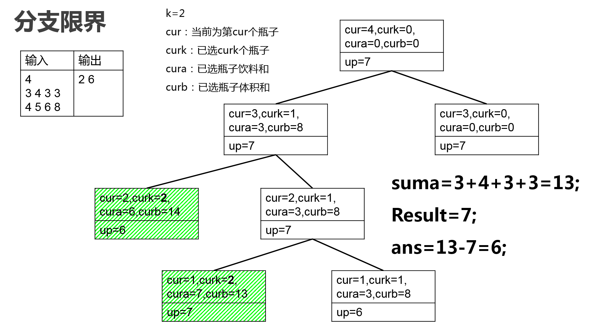

实验任务
在 11 月 11 日生日的小\(X\)同学刚刚过完了他的生日，朋友们在他家开心地举办了盛大的 party 为他庆生。
Party 结束后，留下了\(n\)瓶未喝完的饮料，第\(i\)瓶饮料的容积为\(b_i\)，剩余饮料体积为\(a_i\)。小\(X\)同学十分喜欢这种饮料，希望把剩下的饮料都整理起来慢慢喝，但是家里的冰箱太小了，没有足够多的位置放瓶子，所以他希望用最少的瓶子装完所有剩下的饮料（饮料的体积不超过瓶子的容积）。同时，从一个瓶子倒体积\(v\)的饮料到另一个瓶子需要花费\(v\)单位的时间，小\(X\)急着去看电视剧，他想知道在使用最少瓶子的前提下，最少需要花费多少单位时间能把所有饮料倒到这些瓶子里？
数据输入
输入的第一行为包括一个整数\(n\ (1\leq n\leq 100)\)表示剩余饮料的瓶数。接下来一行，\(n\)个整数\(a_i\ (1\leq a_i\leq 100)\)表示\(n\)瓶饮料所剩体积。最后一行，\(n\)个整数\(b_i\ (1\leq b_i\leq 100)\)表示\(n\)瓶饮料瓶子容积。
数据输出
输出两个整数分别表示所需的最少瓶子数和倒饮料所需最少时间。
| 输入示例 | 输出示例 |
|---|---|
| 4 3 3 4 3 4 7 6 5 |
2 6 |
| 2 1 1 100 100 |
1 1 |
源代码（分支限界法）
1 |
|
设计思路与复杂度分析
题目要求用最少瓶子的前提下耗时也最少。首先确定需要瓶子个数\(k\)，那么问题转化为用\(k\)个瓶子装所有饮料，且转移耗时最少。等价为如下的优化问题： 考虑分支限界法求最大值问题，上界定义为：\(upper\_bound=cura+h(k-curk)\)，其中\(cura\)表示已经选取的瓶子的饮料体积；\(curk\)表示已经选取的瓶子数，\((k-curk)\)表示还要选的瓶子个数；\(h(k-curk)\) 表示从剩余的瓶子中取出\(k-curk\)个瓶子的最大饮料体积。有如下剪枝策略：预处理阶：按照瓶子体积升序排列以求得\(k\)且方便剪枝。然后用运行一次动态规划算法计算\(dp(i,j)\)，表示前\(i\)个瓶子中，选\(j\)个瓶子，能得到的最大饮料体积为计算\(upper\_bound\)做准备。
优先队列实现分值限界法：从第n个瓶子开始搜，搜到第1个瓶子为止。每次找\(upper\_bound\)值最大的节点扩展。
下面是样例分析：

源代码（动态规划）
1 |
|
设计思路与复杂度分析
同分支限界法一样首先确定瓶子个数，但是无法使用前\(cnt\)容积大的瓶子来作为最后结果，因为有可能那\(cnt\)个瓶子外的瓶子剩余量很小且容积较大，或者\(cnt\)个瓶子内容积大却剩余少。选取的\(cnt\)个瓶子要尽量满足将剩余少的瓶子往剩余多的瓶子倒饮料，则找到\(cnt\)个瓶子并且他们剩余的饮料总量最大，则转移时间就最少。所以需要知道选\(cnt\)个瓶子时，可以装其他瓶子的剩余饮料总量可以是多少（\(cnt\)个瓶子的总容积-\(cnt\)个瓶子自己剩余的总饮料量）。如此得到状态转移方程： \[dp(i,j)=max(dp(i,j),dp(i-1,j-bottle_i.left)+bottle_i.volume)\] 其中\(dp(0,0)=0\)，\(dp(i,j)\)为选取\(i\)个瓶子且这\(i\)个瓶子自带\(j\)剩余总量的\(i\)个瓶子的最大总容积。
求解出上述转移方程后即可以通过方程 \[max(sum-init) \ s.t.\ dp[cnt][init] \geq sum,init = 1\cdots sum\] 最终获得所需时间是\(ans=sum-init\) 可以理解为求解cnt个瓶子并且自带剩余饮料总量最大。所需时间就是剩余饮料总量减去这\(cnt\)个瓶子自带的剩余总量。